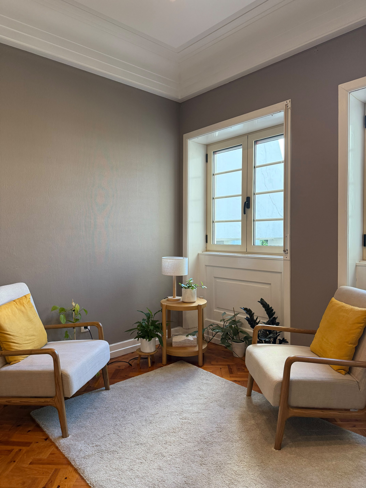

Psicologia Clínica & Psicoterapia
Descobrir o mundo interno.
Compreender a própria história.
Um espaço de escuta onde o mundo interno ganha forma e sentido.
Agendar consulta
Acompanhamento terapêutico
A consulta psicológica
Este é um espaço de escuta, com orientação dinâmica, que acolhe a experiência única de cada pessoa.
A palavra ganha liberdade. Pensamentos, memórias, sonhos e sentimentos ganham significado.
A transformação acontece na relação terapêutica, ao longo do tempo, respeitando o ritmo de cada um.
Atividade profissional
Formação e experiência clínica
Formação clínica
Sou Psicóloga Clínica, com formação em Psicologia Clínica e da Saúde pela Faculdade de Psicologia e de Ciências da Educação da Universidade do Porto.
A minha prática clínica tem sido aprofundada nas áreas da psicoterapia psicanalítica e da intervenção no luto.
Experiência clínica
Tenho desenvolvido o meu trabalho em consulta psicológica individual com jovens adultos e adultos, em contextos institucionais e de clínica privada.
Para além da consulta clínica, tenho desenvolvido trabalho em investigação aplicada, intervenção comunitária e formação na área da saúde mental.
Contacto
As consultas são realizadas mediante marcação prévia, presencialmente no Porto ou online. Pode enviar um e‑mail para esclarecer disponibilidade ou qualquer questão adicional.
Enviar e-mail